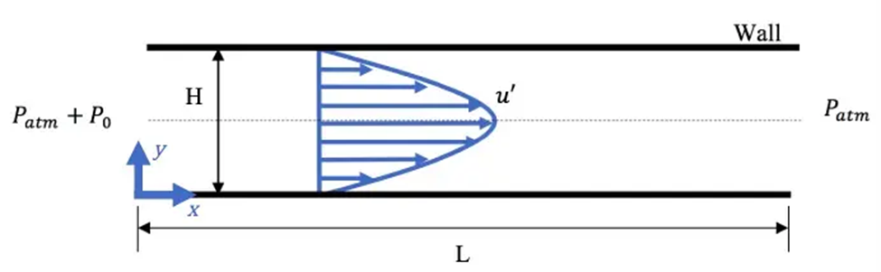
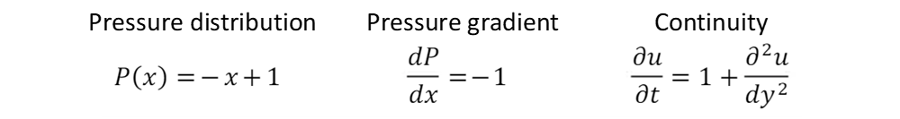
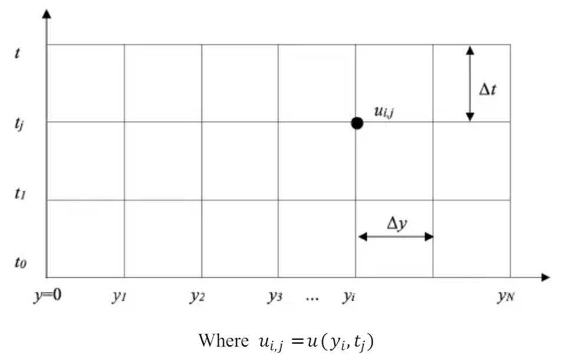
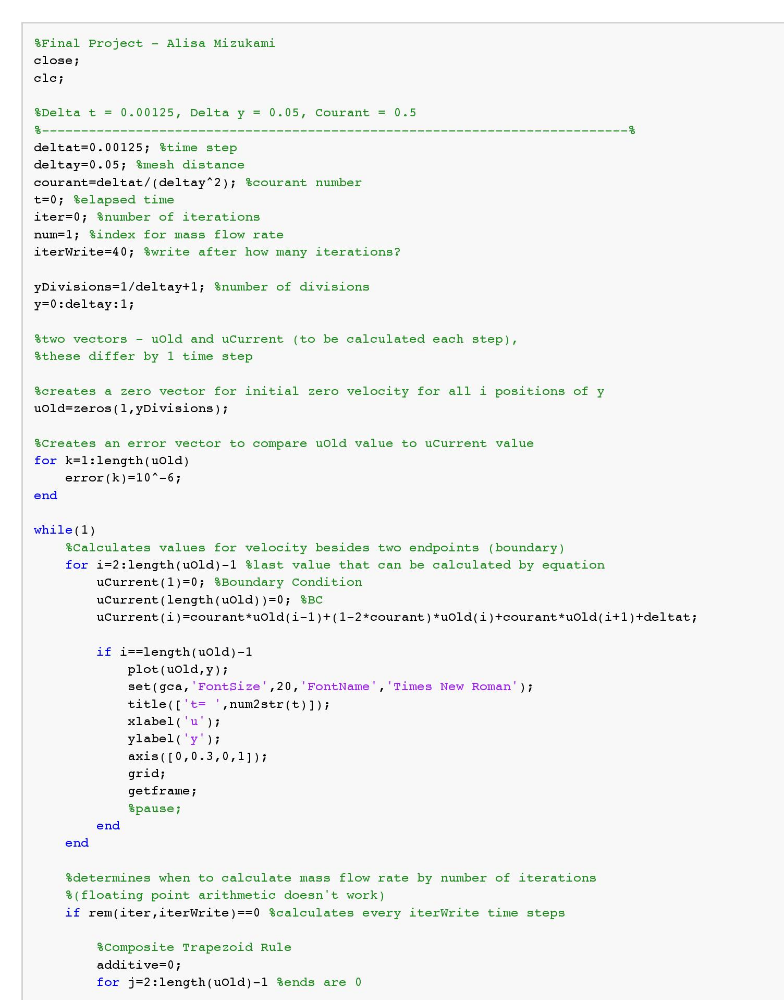
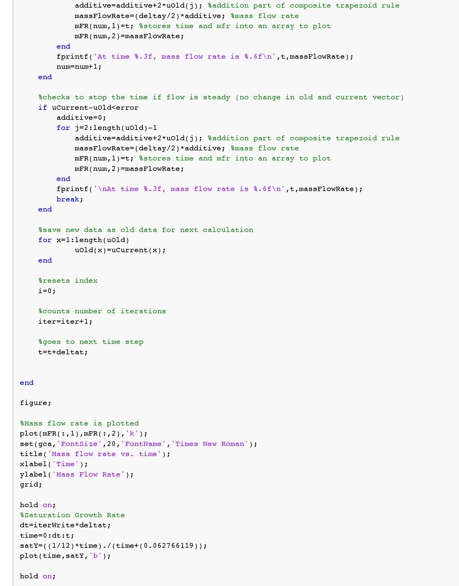
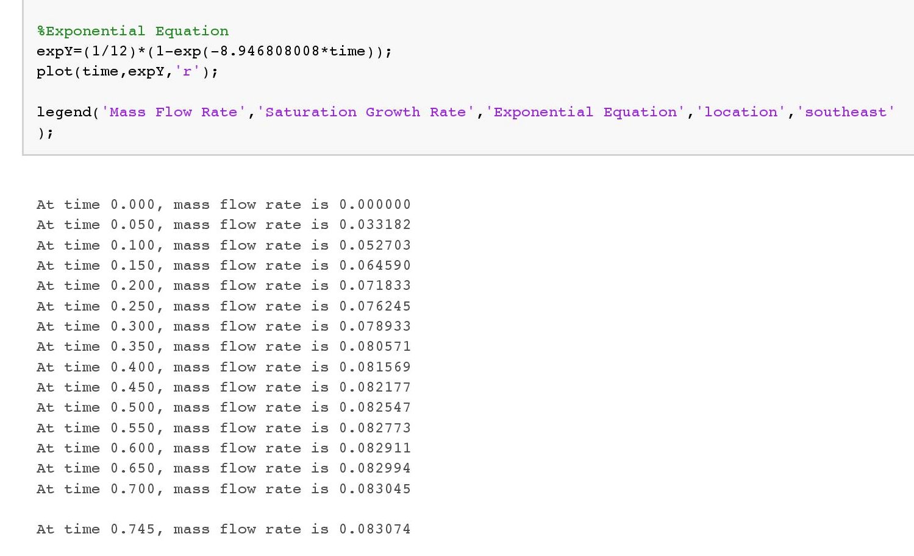
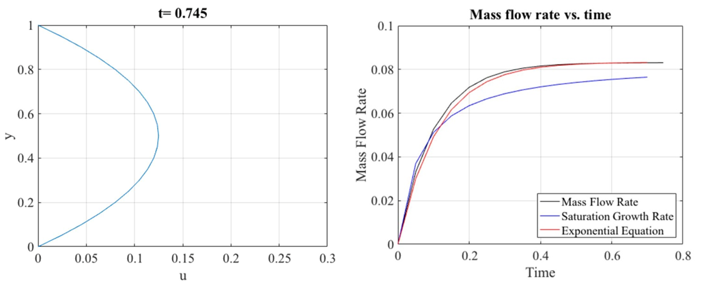

MATLAB Channel Flow Simulation
The Project
To simulate the velocity profile of a fluid flowing through a channel and determine the mass flow rate as a function of time.
Schematic
Fluid flows from left to right through an axisymmetric channel until the flow reaches a steady state.
Equations
The equations to be solved for this case after making assumptions, nondimensionalizing, and applying boundary conditions are:
Finite Difference Method
A grid will be placed over the region of interest to calculate the velocity at a given time and vertical distance.
A Taylor Series Expansion is used to obtain the final equation, using the velocities of a node and its neighboring values.

The Courant condition must be satisfied in order for the finite difference equation to be stable:
Mass Flow Rate
At steady state, the velocity profile is constant:

The mass flow rate can therefore be calculated:
MATLAB
The grid is represented using an array.
The script is written to determine if the flow has reached a steady state by checking the
difference between the values of the last iteration and the current iteration to determine if the difference
is below a given error. Once steady state is detected, the program stops.
An animation of the velocity profile plays until steady state is reached.




Analytical vs. Numerical
The mass flow rate values are compared:
This percent error is very low.